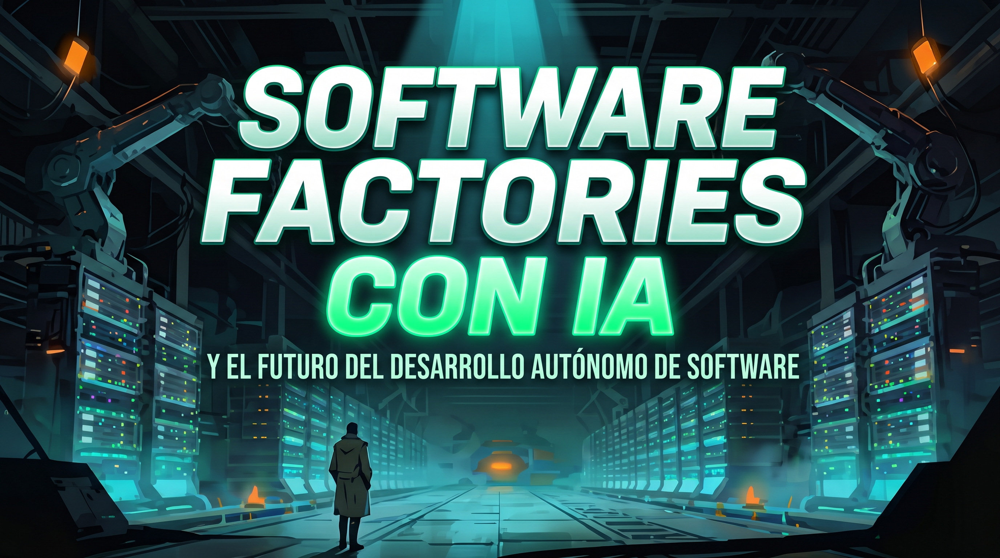
GANCHO
Un individuo puede automatizar y replicar una empresa entera
La IA puede cubrir todos los puestos del ciclo SDLC:
💡 CON SUPERVISIÓN
Light factory
La IA trabaja cada puesto; la persona revisa, decide y aprueba.
Humano en el bucle.
🌑 SIN SUPERVISIÓN
Dark factory
Los agentes escriben, validan y fusionan solos. Nadie mira.
Humano fuera del bucle.
LA LÍNEA DE HOY
La línea de montaje de hoy
ESTACIÓN 1
Cronología
la IA paso a paso, con fechas
ESTACIÓN 2
El SDLC
cómo se fabrica software
ESTACIÓN 3
La IA en el ciclo
luces apagadas vs encendidas
ESTACIÓN 4
Kahoot
el test de la fábrica
ESTACIÓN 1
La cronología de un vistazo
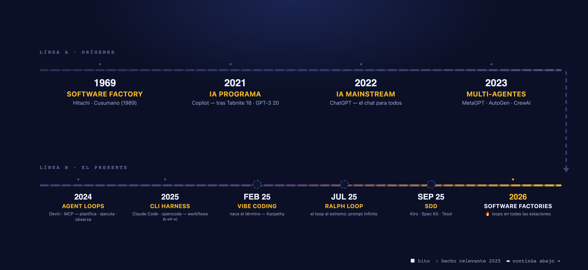
ANEXO 1 · CRONOLOGÍA
The Ralph loop · jul 2025 · Geoffrey Huntley
while true; do
opencode run -m opus-4-5 "$PROMPT"
done
ralph.sh — ghuntley.com/ralph · «full hands-off vibe coding» · «it requires faith — and a belief in eventual consistency»
WHAT IT DOES
Feed the same spec to a headless agent, in an infinite loop. It iterates against tests and lint until it converges — unattended.
THE MEME 🍩
Named after Ralph Wiggum, The Simpsons' simpleton. Your agent is Ralph — sometimes brilliant, often dumb; you tolerate it and correct it.
WHY IT MATTERS
A bash loop made self-running agents mainstream — one step away from factories.
Ralph Wiggum — the namesake
ANEXO 2 · CRONOLOGÍA
Una factory nace del loop: envolverlo y multiplicarlo
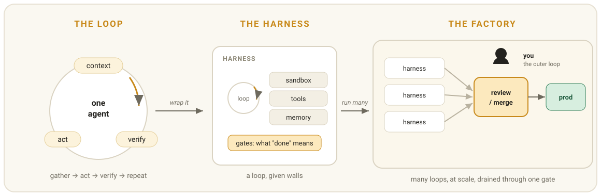
1 loop (context · act · verify) → wrap it: harness con gates → run many: todo drena por una puerta — review/merge → prod
diagrama: Addy Osmani — «Software Factories, Light and Dark»
ESTACIÓN 2 · EL SDLC
ESTACIÓN 2 · ANEXO
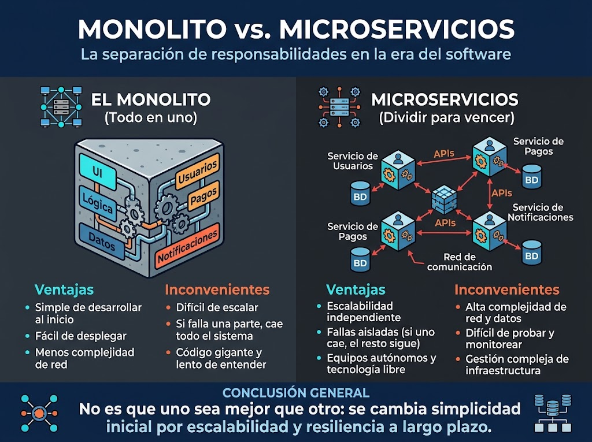
ESTACIÓN 2 · EL SDLC — FOTO COMPLETA
La foto completa
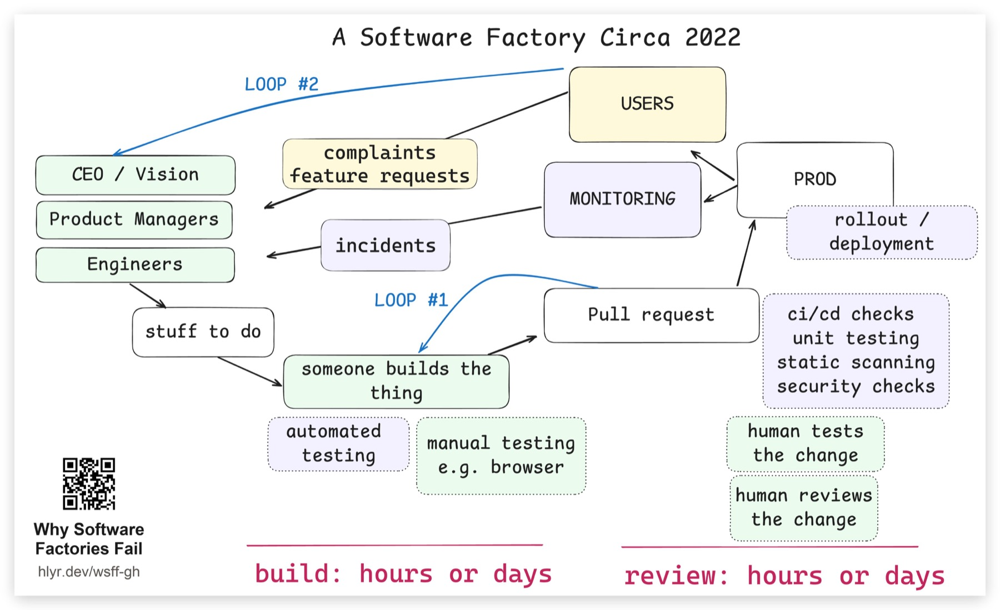
12 transiciones · 3 bucles · 2 tiempos: build y review, horas o días — así se fabricaba software en 2022.
ESTACIÓN 3 · LA IA EN EL CICLO
La fábrica agéntica: cambia una sola pieza
«someone builds the thing» → «an agent builds the thing»
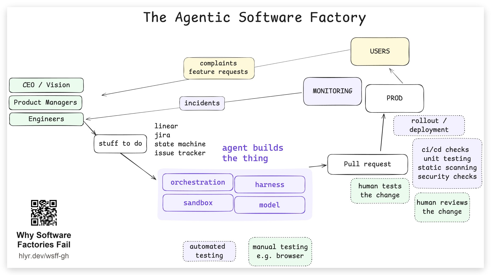
el nuevo motor: orchestration · harness · sandbox · model — el resto de la cinta no cambia
ESTACIÓN 3 · LA IA EN EL CICLO
Cuando el agente construye, el cuello de botella se mueve
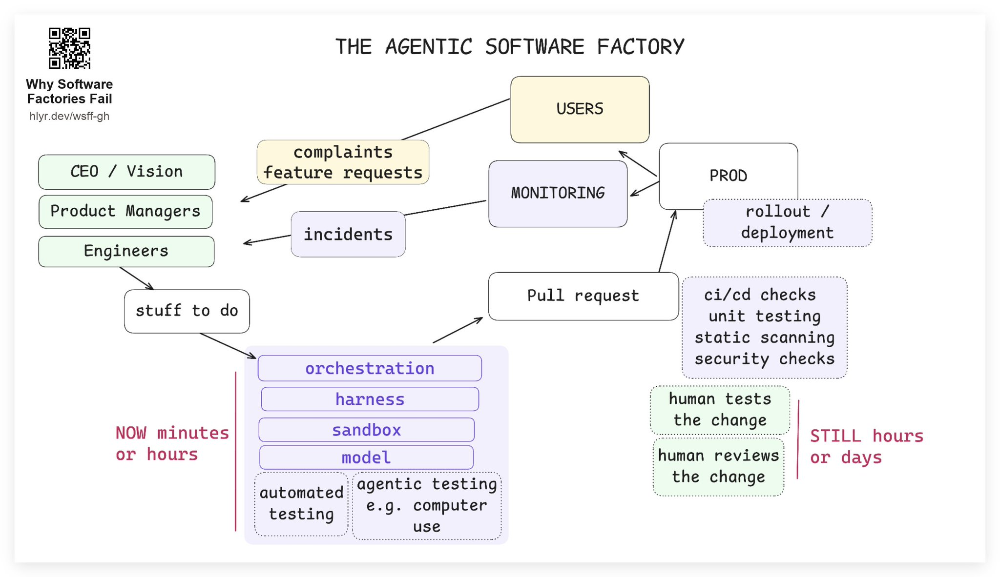
construir: de horas/días a minutos/horas · review: sigue horas/días → review is the bottleneck
ESTACIÓN 3 · LA IA EN EL CICLO
Acelerar el review: agentes que revisan agentes
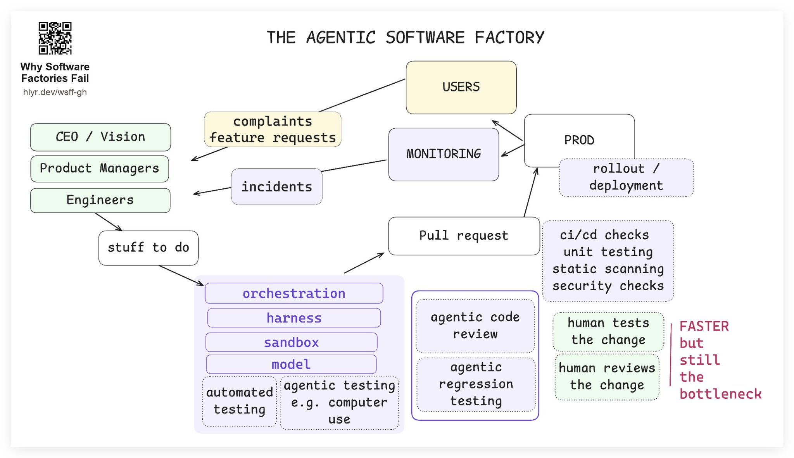
agentic code review (estilo, bugs, seguridad) · agentic regression testing — más rápido, pero sigue siendo el cuello de botella
ESTACIÓN 3 · LA IA EN EL CICLO
Ruta ①: los incidentes entran en la fábrica
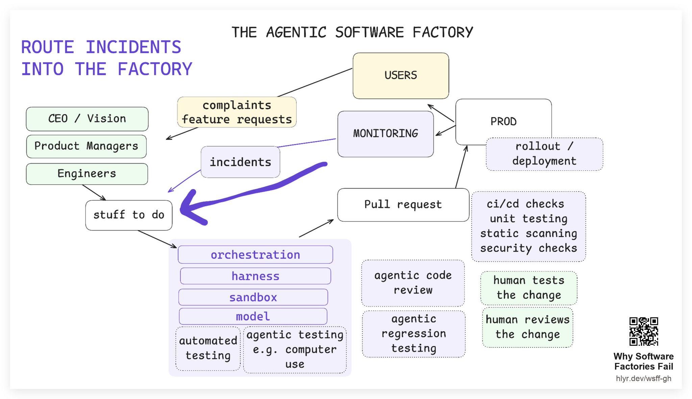
monitoring detecta → incident → stuff to do → un PR que «quizá ya lo arregla» — nadie madruga a las 3 am
ESTACIÓN 3 · LA IA EN EL CICLO
Ruta ②: el feedback del usuario, directo a la cola
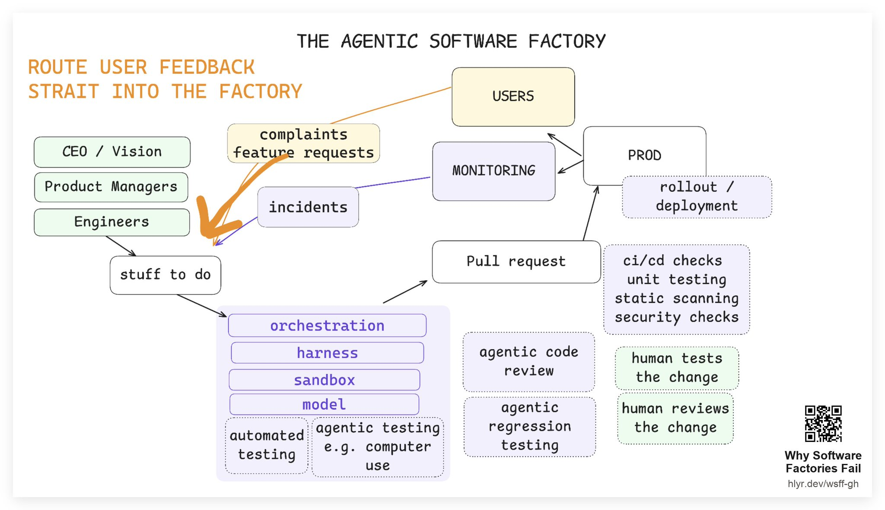
complaints · feature requests → stuff to do — la gente pide cosas, y se construyen
ESTACIÓN 3 · LA IA EN EL CICLO
El trabajo se convierte en dos preguntas
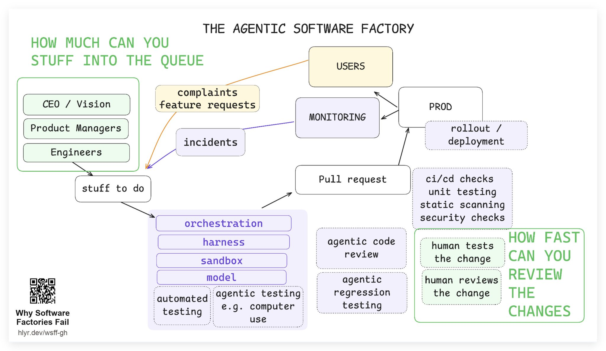
① cuánto cabe en la queue (la cola) · ② qué rápido revisas y testeas lo que sale
ESTACIÓN 3 · LA IA EN EL CICLO
The lights-off software factory
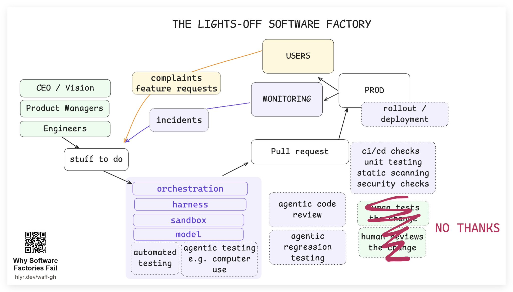
«ya no leemos el código» — término de Dan Shapiro · caso StrongDM (Simon Willison)
ESTACIÓN 3 · LA IA EN EL CICLO
Apagadas las luces, el trabajo es una sola pregunta
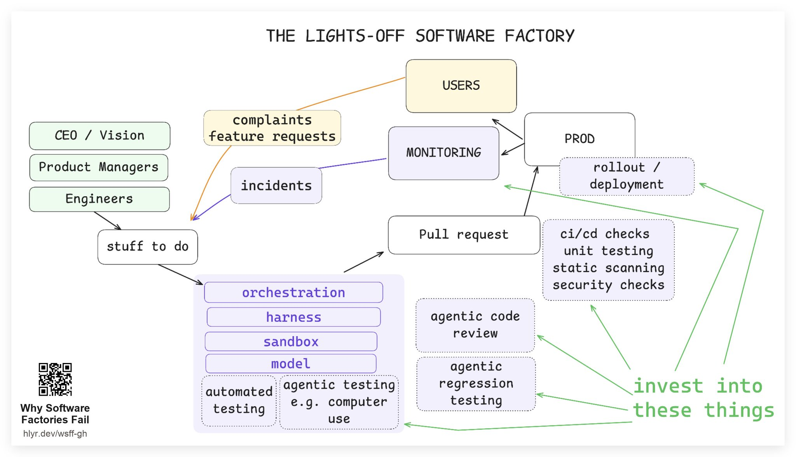
testing · sandboxes · review automática · monitoring · rollout · señales de feedback — ¿cuánto del océano queremos hervir?
ESTACIÓN 3 · LA IA EN EL CICLO
La fábrica acelera… y la factura llega
Faros AI, «Acceleration Whiplash» (abr 2026) · 22.000 desarrolladores · 4.000 equipos · 2 años de datos
📈 LA PROMESA
+66%
épicos completados por dev
+34%
tareas terminadas
🔥 LA FACTURA
×3,5
incidentes por pull request (+242,7%)
+31%
PRs fusionados sin revisar (+31,3%)
Producimos más que nunca — y revisamos menos que nunca · el review, ahora 5× más lento
ESTACIÓN 3 · LA IA EN EL CICLO
¿Por qué se rompen? La recompensa solo ve el test
✅ LO QUE LA RECOMPENSA SÍ VE
El test se pasa en segundos
Es lo único que premia el entrenamiento: el agente practica para el examen… y lo saca.
🕳 LO QUE NO VE
La arquitectura se cobra en meses
El coste del mal diseño llega tarde — demasiado tarde para corregir al modelo.
«Ni más harness ni más loops lo arreglan — es un problema de cómo se entrenan»
la tesis de la charla · «no amount of harness engineering or loops maxing can solve what is fundamentally a model training issue»
ESTACIÓN 3 · LA IA EN EL CICLO
Encender las luces: decidir antes de construir
Las 4 fases de Dex para salir del dark factory — la IA ayuda a redactarlas, el humano las aprueba
FASE 1
Product requirements
¿qué problema, para quién, cómo se mide el éxito?
FASE 2
System architecture
servicios, contratos y restricciones — antes del código
FASE 3
Program design
tipos, firmas, call graphs — «la más infravalorada»
FASE 4
Vertical slices
trozos end-to-end, de la idea a producción
«30 minutos de alineación antes = horas menos de review después»
Read the dang code.
CIERRE
Lo que nos llevamos
cronología · SDLC · la IA en el ciclo — y el criterio humano que lo sostiene todo
1969 → HOY
La fábrica es vieja
lo nuevo: la IA cubre todos los puestos del ciclo
EL SDLC
Una cinta con bucles
12 transiciones · 3 bucles · build y review, horas o días
LA FACTORY
Loop × harness × many
muchos bucles con paredes — una sola puerta: review/merge
LAS LUCES
Light vs dark
con criterio humano funciona — sin él, ×3,5 incidentes
Read the dang code.
CIERRE · FUENTES
Fuentes · para seguir leyendo
🎥 LA CHARLA
Dex Horthy — «Harness Engineering is Not Enough: Why Software Factories Fail»
AI Engineer World's Fair 2026
youtube.com/watch?v=Ib5GBkD555M
hlyr.dev/wsff-gh · ensayo
ai.engineer/talks · página del talk
📚 CONTEXTO
Addy Osmani — Software Factories, Light and Dark
addyosmani.com/blog/software-factories
Dan Shapiro — The five levels · el término lights-off
danshapiro.com/blog
Simon Willison — el caso StrongDM
simonwillison.net/2026/Feb/7
📊 LOS DATOS
Faros AI — Acceleration Whiplash · 22.000 devs
faros.ai
Recursive AI — la fábrica Alera
recursiveai.org/research/alera-library-factory
MDflow — métricas y benchmarks
mdflow.cz/blog/why-ai-software-factories-fail
lista completa — 16 fuentes extraídas en el repo: docs/SOURCES.md